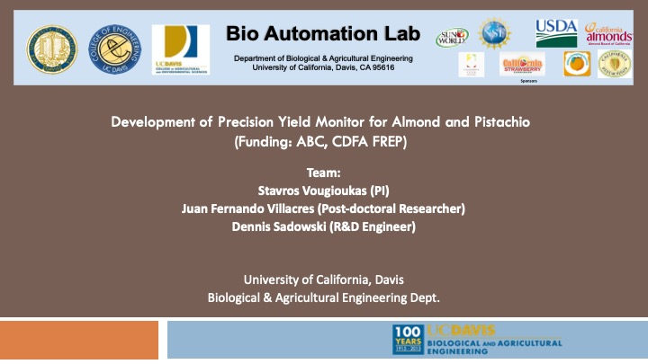

FRAIL-bots: fragile-crop harvest-aiding mobile robots
Small co-robots carry empty and full containers for people picking fragile crops, so crews spend less time walking product out of the field.
The lab works on mechanization, agricultural robotics, and automation for specialty crop production. The goal is technology that improves the efficiency and working conditions of people in the field, or that replaces labor in some tasks. A second thread is the robotics underneath that work: sensor-based navigation that stays safe, accurate, and robust in orchards.
Robotic harvesting of fresh-market fruit has stayed out of reach for most crops for sixty years. Selective picking was shown to be possible in principle more than thirty years ago. Harvest efficiency — the share of marketable fruit actually picked — and picking speed still limit the approach. The lab studies harvesters with many arms, including mechanical designs and ways to split work across those arms so the machine picks faster.
Better orchard machines are hard to design without models of the whole harvest. The lab builds model-based design tools so researchers can study how orchard layout, canopy geometry, fruit distribution, harvester design, and worker activity depend on each other.
Robots still cannot match human perception and dexterity for jobs such as harvesting and pruning. One path is machines that work with people: they take on transport and positioning, and people keep the judgment. That requires models of how agricultural workers actually move and pick, so a robot can collaborate safely. It also requires fleets of autonomous vehicles that coordinate field logistics without putting people or equipment at risk.
Small co-robots carry empty and full containers for people picking fragile crops, so crews spend less time walking product out of the field.

Platforms that carry pickers along a fruiting wall and move each person to the fruit zone that matches their picking speed.

Many low-cost linear arms, shared perception, and scheduling so a harvester can pick high-density apple and pear canopies.

A three-wheeled electric robot that carries tubs of table grapes between pickers and the collection station.

A high-speed line that orients strawberries and removes the calyx and stem. The design was licensed to Atlas Pacific.

Shaking and inversion machines that mix saliva samples so they can be pipetted. Two units processed thousands of samples a day.

Yield monitoring at single-tree resolution, including sensing during harvest and tree-level estimates from aerial imagery.